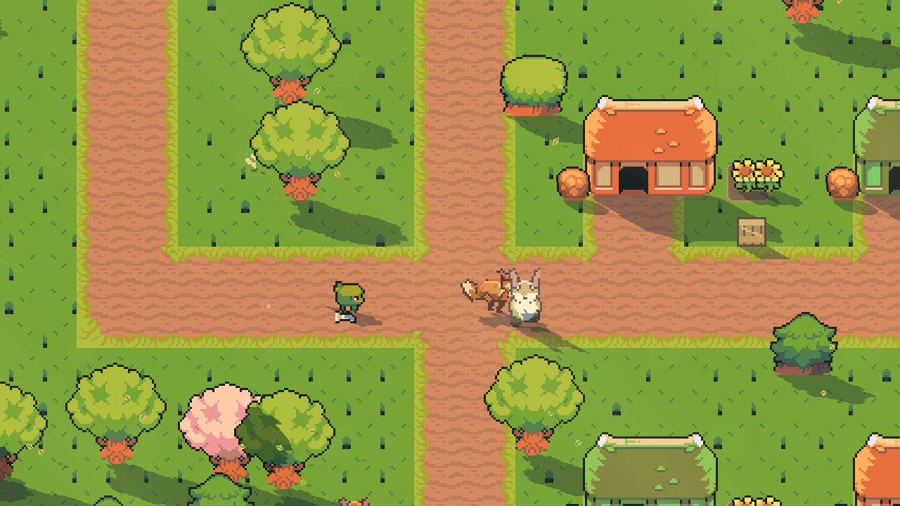

Настоящие кадры Godot, не концепт-арт и не браузерная версия игры. Все участки карты сняты с увеличением ×2. Можно выбрать любой дом, дерево или дорожный тайл и открыть покрывающий его кадр с реальными коллизиями.

Тени повторяют кадры спрайтов и движение крон. Дома и камни неподвижны; растения шевелятся. Ниже — полный крупноплановый осмотр без частиц, чтобы не скрывать геометрию.